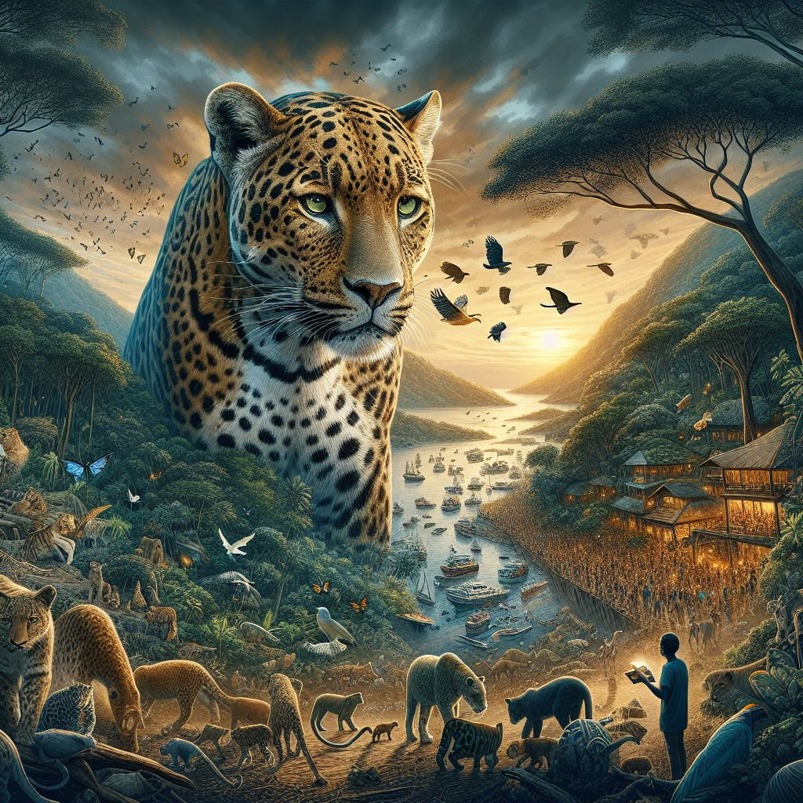

Sri Lankan Leopard
Where Leopard is found in Sri Lanka
Yala National Park:
Located in the southeastern part of Sri Lanka, Yala National Park is the most popular and well-known destination for leopard sightings. The park is characterized by diverse ecosystems, including dense jungles, open grasslands, and coastal areas. Leopards in Yala are accustomed to safari vehicles, providing visitors with a higher chance of spotting these elusive cats.
Wilpattu National Park:
As the largest national park in Sri Lanka, Wilpattu is situated in the northwest and is known for its unique landscape featuring natural lakes known as "villus." The park has a substantial leopard population, and its dense vegetation provides good cover for these big cats. Wilpattu offers a more secluded and serene environment for wildlife enthusiasts.
Udawalawe National Park:
While Udawalawe is famous for its elephant population, it is also home to leopards. This park, located in the southern part of Sri Lanka, is characterized by open grasslands and a large reservoir. The leopards here are often spotted near water sources, and the park's scenic beauty adds to the overall wildlife experience.
These venues not only offer the chance to witness leopards in their natural habitat but also showcase the rich biodiversity of Sri Lanka. Each park has its own unique features and landscapes, making them special destinations for wildlife enthusiasts.
Threats to leopards

Habitat loss is a significant threat to leopard populations, leading to a decline in their natural environments. This has consequences for their prey availability and overall ecosystem balance.
Conservation efforts include habitat restoration projects and the establishment of protected areas.
Learn more about habitat conservation.
Poaching poses a serious threat to leopards, driven by illegal wildlife trade and demand for leopard parts. This activity has severe consequences for leopard populations and disrupts the natural balance of ecosystems.
Conservation measures involve anti-poaching patrols, community education, and supporting laws against wildlife trafficking.
Support anti-poaching efforts.